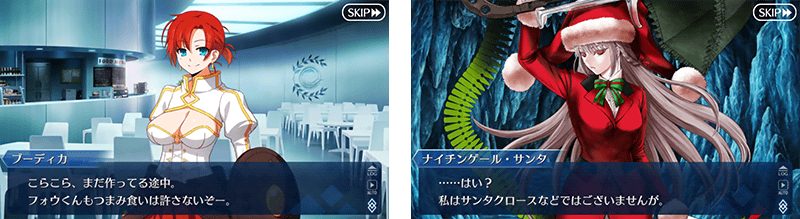
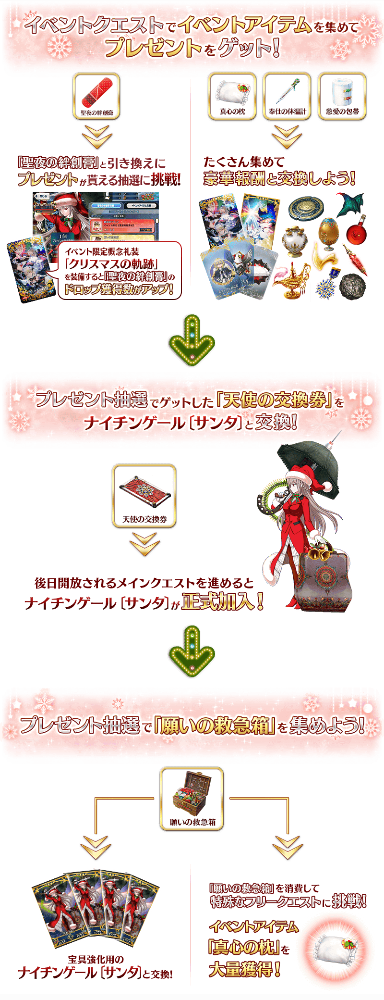
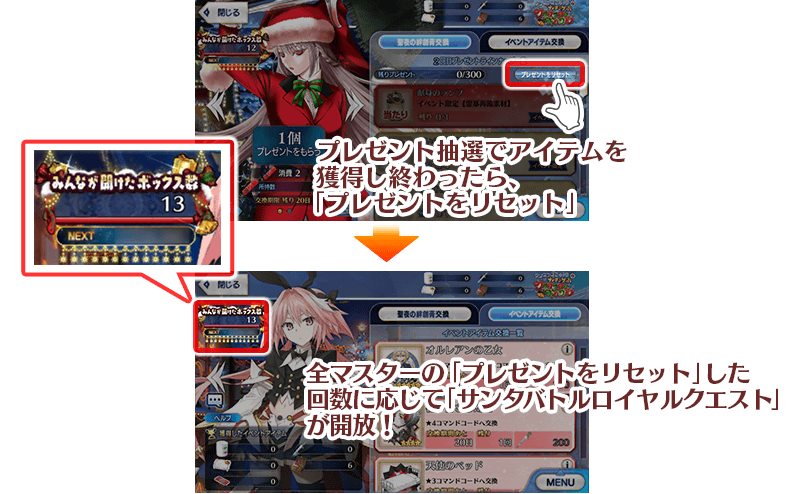
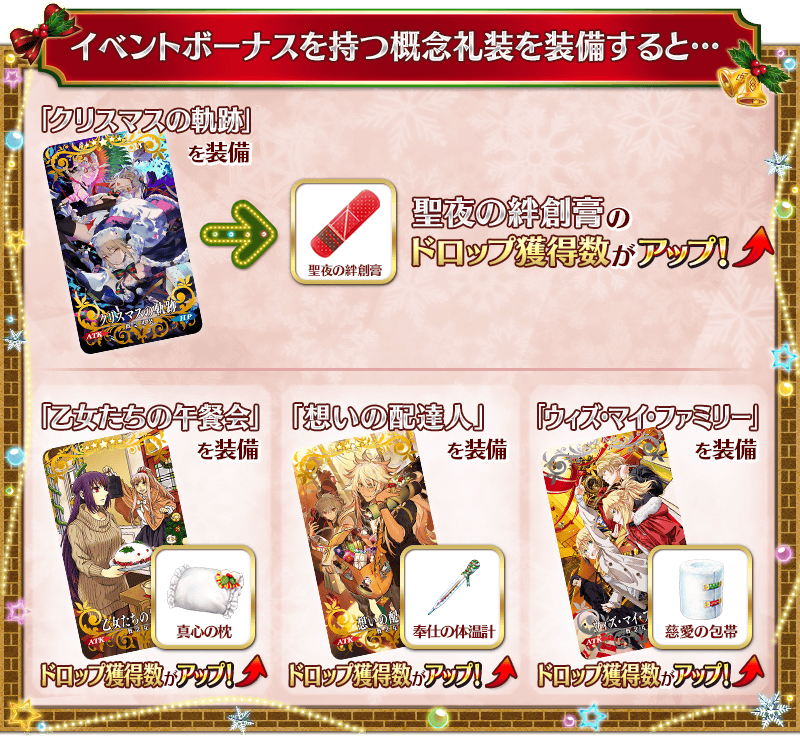
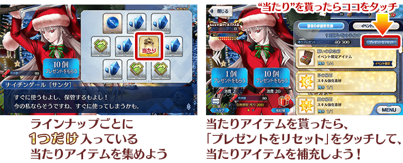
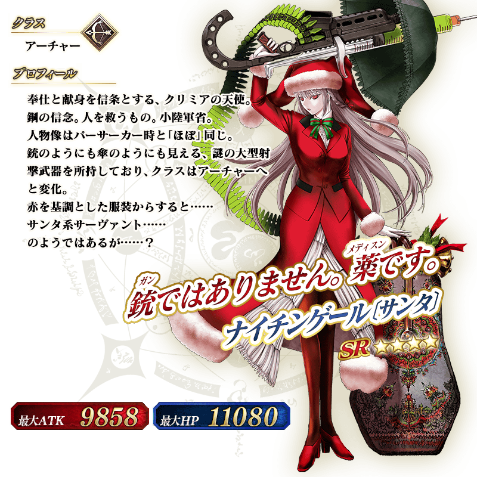
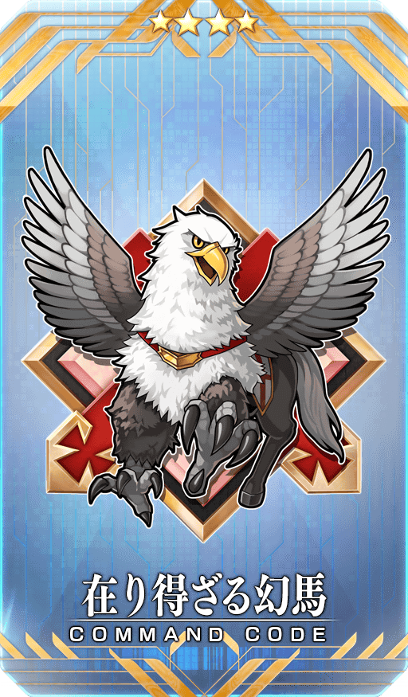
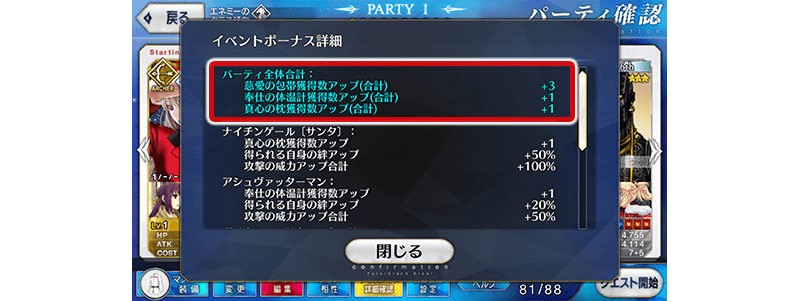
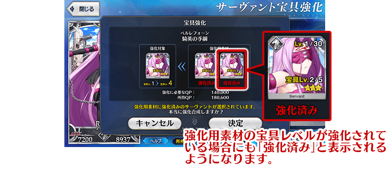

※11月28日(四) 18:30圖片修正

預定舉辦期間限定活動「聖誕節2019 南丁格爾的聖誕頌」！
觀測到特異點的是廣布雪原的謎之島！？
從者們為何在那邊戰鬥……。
寒冷的冬季，就從熱血聖誕之戰開始！
本活動中進行主線關卡的話，活動限定從者「★4(SR)南丁格爾〔聖誕〕」會以期間限定暫時加入。
更加推進主線關卡，讓「★4(SR)南丁格爾〔聖誕〕」正式加入吧！
活動期間中將開放享受故事的主線關卡。
除了以各關卡入手的活動收集道具交換各種報酬外，還可挑戰得到各式各樣道具的抽選！
在各關卡收集活動道具，得到聖誕節禮物吧！
※本頁面皆為開發中圖片。會有與實際圖片相異的情況。 ※一部份的關卡為日後開放。
◆活動舉辦期間◆
2019年11月27日(三) 17:00～12月11日(三) 11:5911月28日(四) 18:30～12月12日(四) 11:59
◆活動參加條件◆
滿足以下條件的御主才能參加
・通過「特異點F 炎上汙染都市 冬木」

【11月28日(四) 18:30圖片修正】

※「願望急救箱」與「南丁格爾〔聖誕〕【寶具強化用】」的交換會在「★4(SR)南丁格爾〔聖誕〕」正式加入後開放。
享受故事的主線關卡會以下表的行程開放。
推進主線關卡的話，會開放可收集活動道具的自由關卡。
【關卡的舉辦期間】
| 關卡的種類 | 舉辦期間 |
|---|---|
|
序幕～ 主線關卡 第一節 自由關卡 |
2019年11月27日(三) 17:0011月28日(四) 18:30～ 12月11日(三)12月12日(四) 11:59 |
|
主線關卡 第二節 自由關卡 |
2019年11月28日(四)11月29日(五) 17:00～ 12月11日(三)12月12日(四) 11:59 |
|
主線關卡 第三節 自由關卡 |
2019年11月29日(五)11月30日(六) 17:00～ 12月11日(三)12月12日(四) 11:59 |
|
主線關卡 第四節 自由關卡 |
2019年11月30日(六)12月1日(日) 17:00～ 12月11日(三)12月12日(四) 11:59 |
|
主線關卡 第五節 自由關卡 |
2019年12月1日(日)12月2日(一) 17:00～ 12月11日(三)12月12日(四) 11:59 |
| 主線關卡 第六節 自由關卡 |
南丁格爾〔聖誕〕正式加入
2019年12月2日(一)12月3日(二) 17:00～
12月11日(三)12月12日(四) 11:59 |
| 後記 |
2019年12月7日(六)12月8日(日) 17:00～ 12月11日(三)12月12日(四) 11:59 |

於禮物抽選抽中大獎道具後，領取陣容內全道具「禮物重置」的話，會提升「大家的開箱數」計算。
「大家的開箱數」是計算全御主「禮物重置」的次數，達到規定値的話會開放「聖誕大混戰關卡」！
有好幾個「聖誕大混戰關卡」存在，各自可獲得豪華的報酬。
大家來開箱讓「聖誕大混戰關卡」開放吧！

通過主線關卡 第一節的話，會追加消耗從禮物抽選得到的「願望急救箱」所執行特殊自由關卡。
特殊自由關卡是執行1次要消耗5個「願望急救箱」，通過後可獲得比普通自由關卡更多的活動收集道具。
特殊自由關卡就算通過後也能無數次挑戰。
※無法通過關卡的情況，不會消耗「願望急救箱」。
【12月3日(二) 17:00追記】
以通過期間限定活動「聖誕節2019 南丁格爾的聖誕頌」第六節及「終局特異點」的御主做為對象，開放高難易度的「挑戰關卡」。
「挑戰關卡」就算通過後也不會消失，能無數次挑戰，可以變更從者和概念禮裝的組合後再次挑戰。 ※關卡通過報酬、戰利品、御主EXP、魔術禮裝EXP、絆點數只可在初次通過時獲得。
◆挑戰關卡開放時間◆
2019年12月3日(二) 17:00～
◆挑戰關卡參加條件◆
滿足以下條件的御主才能參加
・通過期間限定活動「聖誕節2019 南丁格爾的聖誕頌」的第六節
・通過「終局特異點」
◆挑戰關卡初次通過報酬◆
傳承結晶 1個

超值攻略方法・其1
本活動的期間中，強化「★4(SR)南丁格爾〔聖誕〕」時的獲得經驗值變成2倍。
是讓活動加成對象「★4(SR)南丁格爾〔聖誕〕」等級一口氣上升的機會！
◆舉辦期間◆
2019年11月27日(三) 17:00～12月11日(三) 11:5911月28日(四) 18:30～12月12日(四) 11:59
超值攻略方法・其2
本活動的期間中，下表的從者在活動關卡中會得到「自身的攻擊威力提升」與「絆點數獲得量提升」的加成！
強化對象從者，挑戰活動吧！
※活動加成的效果量因從者而異。
※瑪琇・基利艾拉特「絆點數獲得量提升」效果，是所謂「我方全體含候補的絆點數獲得量提升」的效果。支援時此效果無效。
※自11月22日(五) 17:00，在從者選擇畫面和從者強化畫面等，追加活動加成篩選器。
由於是只顯示於活動活躍從者的便利功能，敬請活用。
【活動加成的效果與對象從者】
| 自身的 攻擊 威力 |
絆點數 獲得量 |
職階 | 稀有度 | 從者名 |
|---|---|---|---|---|
| ＋100% | 只限自身 ＋50% |
Saber | ★★★★★ | 阿斯托爾福 |
| Archer | ★★★★ | 南丁格爾〔聖誕〕 | ||
| Berserker | ★★★★★ | 南丁格爾 | ||
| ＋50% | 只限自身 ＋20% |
Archer | ★★★★ | 馬嘶 |
| ★★★★ | 阿提拉・the・San〔誕〕 | |||
| Lancer | ★★★★ | 貞德・Alter・聖誕・Lily | ||
| Rider | ★★★★ | 阿爾托莉亞・潘德拉剛〔聖誕Alter〕 | ||
| Caster | ★★★★ | 童謠 | ||
| Ruler | ★★★★ | 魁札爾・科亞特爾〔森巴／聖誕〕 | ||
| ＋30% | 只限自身 ＋20% |
Saber | ★★★ | 蓋烏斯・尤利烏斯・凱撒 |
| ★ | 伊阿宋 | |||
| Archer | ★★★★★ | 俄里翁 | ||
| ★★★★ | Emiya | |||
| ★★★ | 羅賓漢 | |||
| ★★ | 帕里斯 | |||
| Lancer | ★★★★★ | 布拉達曼特 | ||
| ★★★ | 寶藏院胤舜 | |||
| ★★ | 加雷斯 | |||
| Rider | ★★★★ | 阿斯托爾福 | ||
| ★★★ | 布狄卡 | |||
| ★ | 巴沙洛繆・羅伯茨 | |||
| Caster | ★★ | 陳宮 | ||
| ★★ | 漢斯・克里斯蒂安・安徒生 | |||
| Assassin | ★★★★★ | 開膛手傑克 | ||
| ★★★ | 風魔小太郎 | |||
| ★ | 夏綠蒂・科黛 | |||
| Berserker | ★★★★★ | 弗拉德三世 | ||
| ★★★★★ | 坂田金時 | |||
| ★★★★ | 阿塔蘭塔〔Alter〕 | |||
| ★★★ | 大流士三世 | |||
| ★★ | 莎樂美 | |||
| Ruler | ★★★★★ | 天草四郎 | ||
| Avenger | ★★★★★ | 貞德〔Alter〕 | ||
| 我方全體 ＋5% |
Shielder | ★★★ | 瑪琇・基利艾拉特 |
※就算成為對象從者也會有在本活動的主線劇本未登場的情況。
超值攻略方法・其3
裝備活動限定概念禮裝與期間限定概念禮裝，會提升活動道具的掉落獲得數！
裝備可在活動道具交換入手的活動限定概念禮裝「聖誕的軌跡」的話，會提升活動道具「聖夜OK繃」的掉落獲得數。
另外，裝備在聖晶石召喚Pick Up的期間限定概念禮裝「乙女たちの午餐会」「想いの配達人」「ウィズ・マイ・ファミリー」的話，會提升活動道具「真心之枕」「效勞體溫計」「慈愛繃帶」各自的掉落獲得數。
※請注意各關卡的道具掉落率並非100％。



在活動關卡收集「聖夜OK繃」，於禮物抽選交換禮物吧！
禮物的交換是以抽選方式進行。
禮物的陣容會各放入1個大獎道具。
抽到大獎道具，點擊「禮物重置」的話，會補充新的大獎道具，切換到下個陣容。
放入大獎道具禮物的陣容有10次份！
獲得大獎道具，沒有吸引目光的禮物就點擊「禮物重置」，補充大獎道具吧！
※第11次以後不會補充大獎道具及「黃金果實」「白銀果實」。 ※禮物陣容中的活動收集道具「願望急救箱」除了可交換「南丁格爾〔聖誕〕【寶具強化用】」和素材外，收集的話可執行特殊的自由關卡。 ※交換期間結束後「聖夜OK繃」會消失。
◆交換期間◆
2019年11月27日(三) 17:00～12月18日(三) 11:5911月28日(四) 18:30～12月19日(四) 11:59

◆禮物陣容◆
【大獎道具】
| 陣容次數 | 大獎道具 | ||
|---|---|---|---|
| 第1～4次 | 活動限定靈基再臨素材「獻身提燈」 | ||
| 第5次 |

|
天使交換券 | |
| 第6次 | 傳承結晶 | ||
| 第7～10次 |

|
英靈結晶・日輪之芙芙ALL★4(ATK) | |
| 第11次以後 | 無(入手全道具後才能重置禮物) | ||
※通過第六節後才能在活動道具交換用天使交換券交換「★4(SR)南丁格爾〔聖誕〕」。
【禮物】
| 種類 | 禮物 | ||
|---|---|---|---|
| 活動道具 | 願望急救箱 | ||

|
聖誕節2019交換券 | ||
| 技能強化＆靈基再臨素材 |
鬼魂提燈 八連雙晶 禁斷書頁 龍之牙 |
||
| 技能強化素材 |
剣之秘石 弓之秘石 槍之秘石 騎之秘石 術之秘石 殺之秘石 狂之秘石 剣之魔石 弓之魔石 槍之魔石 騎之魔石 術之魔石 殺之魔石 狂之魔石 剣之輝石 弓之輝石 槍之輝石 騎之輝石 術之輝石 殺之輝石 狂之輝石 |
||
| 其他道具 |
睿智的猛火 ALL★4(SR) 睿智的大火 ALL★3(R) 黃金果實 白銀果實 赤銅果實 魔力稜鏡 QP 友情點數 |
||
關於聖誕節2019交換券

聖誕節2019交換券可自禮物箱3種道具交換任一種。
能交換道具為「混沌之爪」「鳳凰羽毛」「巨人戒指」。
持有好幾張聖誕節2019交換券的情況，能一口氣全部交換。
※交換期間結束後「聖誕節2019交換券」會消失。
◆交換期間◆
2019年11月27日(三) 17:00～12月21日(六) 22:5911月28日(四) 18:30～12月22日(日) 22:59

◆靈基再臨◆
使用能靠禮物抽選入手的「獻身提燈」，重複4次靈基再臨的話，卡面會有所變化！

※「★4(SR)南丁格爾〔聖誕〕」不會隨靈基再臨使戰鬥角色的外觀變化。

【11月28日(四) 18:30追記】
介紹「★4(SR)南丁格爾〔聖誕〕」的寶具演出！
在「Fate/Grand Order」官方網站內的公告中，以影片公開寶具演出，敬請確認。
活動道具可自點擊管理室(ターミナル)畫面右上「活動報酬」的「活動道具交換」畫面，交換以下的道具。
※關於英靈結晶・流星之芙芙ALL★4(HP)、500,000QP的交換，會在進行12月2日(一)開放的本活動後才能交換。 ※活動道具交換期間結束後「願望急救箱」「真心之枕」「效勞體溫計」「慈愛繃帶」「聖夜OK繃」「天使交換券」會消失。
◆交換期間◆
2019年11月27日(三) 17:00～12月18日(三) 11:5911月28日(四) 18:30～12月19日(四) 11:59
◆能用願望急救箱交換的道具◆
 |
【活動限定從者】 【其他道具】 |
◆能用真心之枕交換的道具◆
|
【活動限定概念禮裝】 【活動報酬指令紋章】 【技能強化＆靈基再臨素材】 【靈基再臨素材】 【其他道具】 |
◆能用效勞體溫計交換的道具◆
 |
【活動限定概念禮裝】 【活動報酬指令紋章】 【技能強化＆靈基再臨素材】 【靈基再臨素材】 【其他道具】 |
◆能用慈愛繃帶交換的道具◆
|
【活動限定概念禮裝】 【活動報酬指令紋章】 【技能強化＆靈基再臨素材】 【其他道具】 |


|
★★★★★SSR
|


|
【活動限定】 |
|  |
★★★★SR |

|
★★★R |
在2019年11月27日(三)維修後反映的更新內容之中，介紹代表性的內容。
◆追加時間◆
2019年11月27日(三) 17:0011月28日(四) 18:30～
活動加成詳細中，修改成會顯示活動加成的合計値
在點擊「活動加成詳細確認」時顯示的對話框中，不是只有個別的從者，變得也會顯示隊伍全體獲得的活動加成合計値。

修改以賦予狀態效果「無敵」「迴避」的狀態受到攻擊時的舉動
以賦予狀態效果「無敵」「迴避」的狀態受到攻擊時，修改成「防禦力提升」「傷害減免」等的"持有次數限制的一部份狀態效果"的次數不會減少。
寶具強化時，修改成在使用強化過寶具等級的強化用素材時會顯示警告
在強化從者的寶具時，強化過寶具等級的強化用素材的情況變得也會顯示警告。

其他還有，期間限定「聖誕節2019Pick Up召喚(每日交替)」同時舉辦！
關於詳情，請自下述橫幅確認。
■「聖誕節2019Pick Up召喚(每日交替)」詳細情報
 ※11月28日(四) 18:30圖片修正
※11月28日(四) 18:30圖片修正